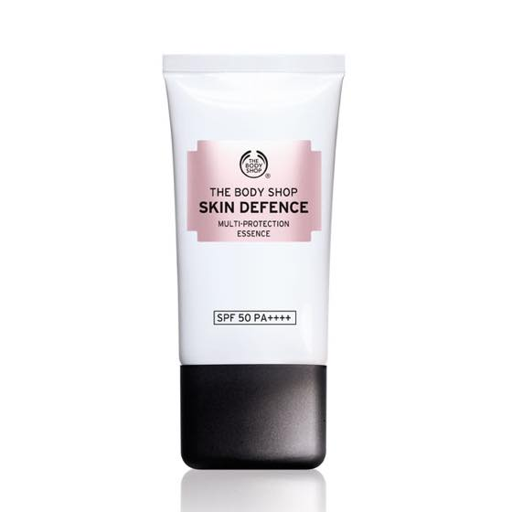
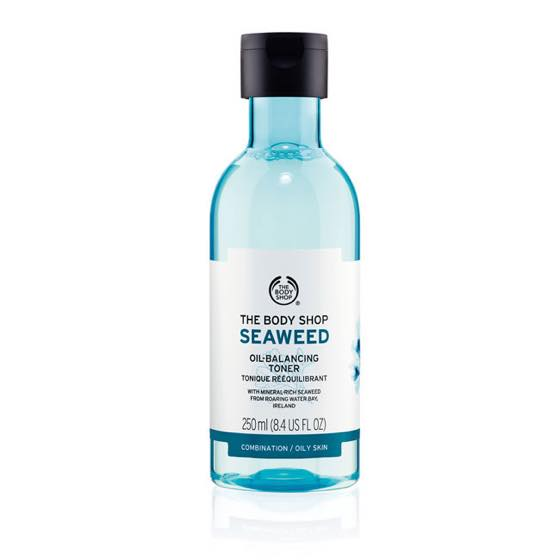

바디샵에서 하나 사왔는데 3for2행사 중이랑 예전에 한참 잘 썼던 씨위드 토너 두개를 집어왔다.
요 선크림 계산대로 가져가자 판매원분이 완전 빵끗 웃으면서 이제품 자기도 넘 좋아한다고 그러더라 ㅋㅋ
얼굴에 바르는건 무죠건 쵹쵹이제품을 좋아합니다.
그런데도 얼굴은 항상 수분부족;; 도대체 뭘 발라야 피부에 수분이 채워지는걸까요;;;

보틀 디자인도 바뀌고 해서 오랜만에 한번 써볼까 싶어서 가져왔는데
솜에 묻혀서 얼굴닦으면 굉장히 화~한 느낌이 난다;; 피부 벌겋게 뒤집어지는거아냐? 싶어서 걱정되었는데
아침저녁 써본결과 그건아닌듯;;
고민됩니다;; 두개나 사왔는데에에;;;
내가 기억하던 씨위드 토너는 이런 느낌이 아니었는데;;
마이 달라졌네욤;;;